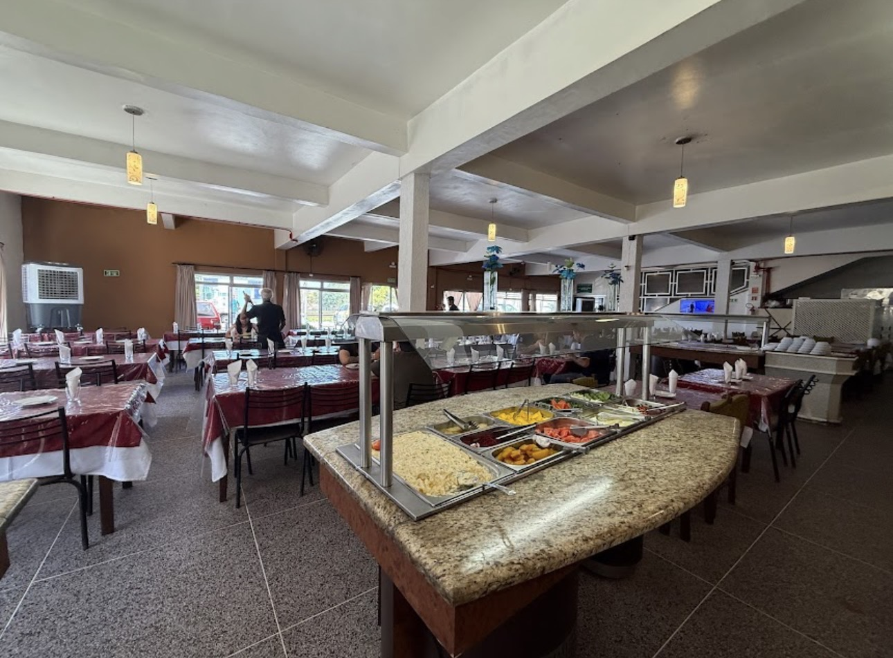
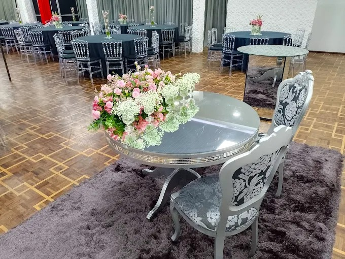
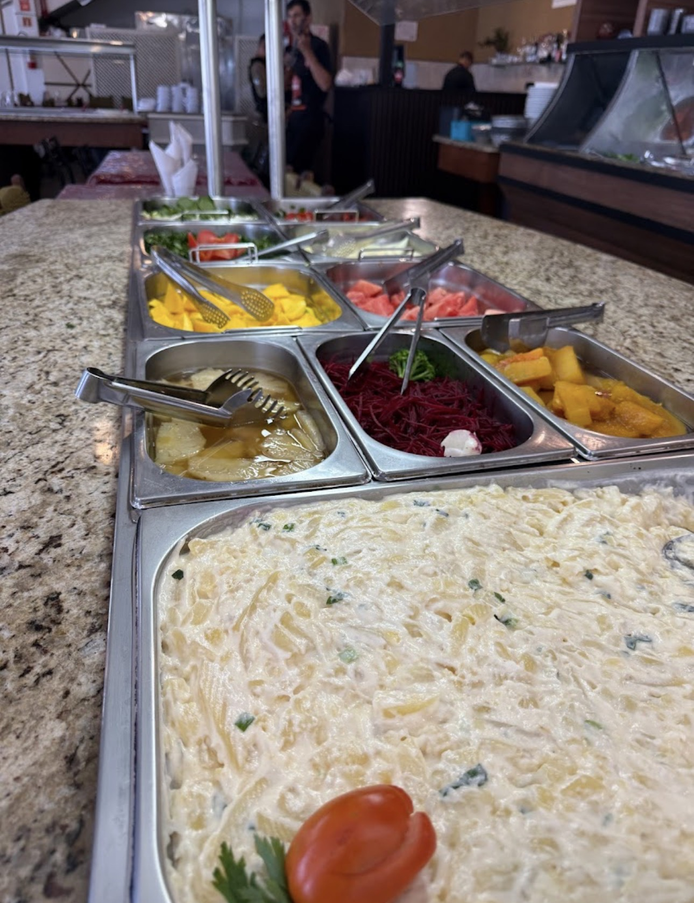
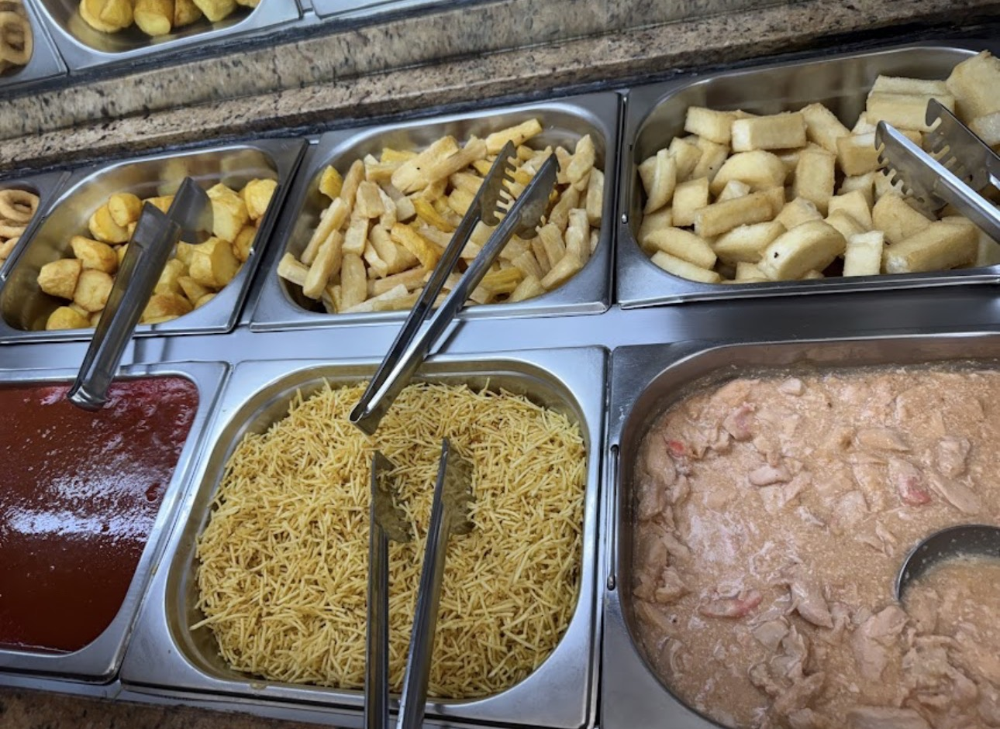
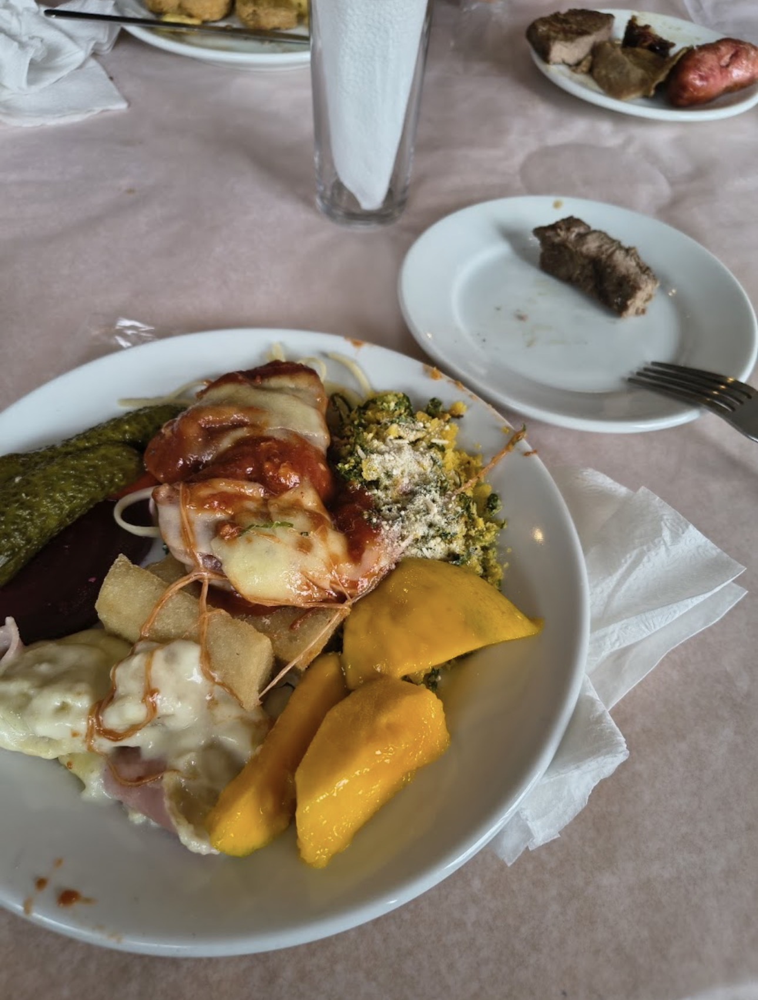
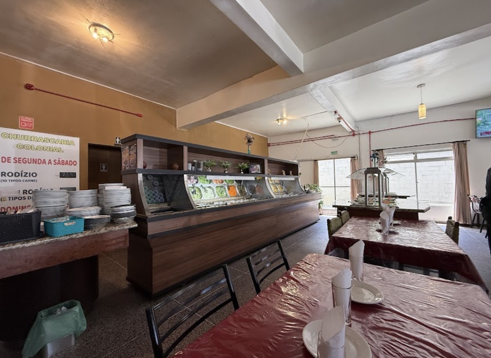
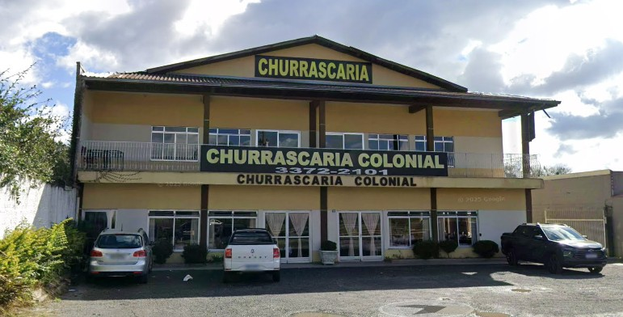

Carnes assadas na brasa
Cortes preparados no fogo, servidos no ritmo do rodízio tradicional.
Curitiba - PR
Rodízio de carnes assadas na brasa, saladas, pratos quentes e um espaço amplo de clima familiar.
Sobre a Colonial
A Churrascaria Colonial é um restaurante de cozinha regional em Curitiba, conhecido pelo rodízio de carnes assadas na brasa, buffet à vontade, saladas, pratos quentes e ambiente amplo de clima familiar.
O espaço foi pensado para quem procura uma refeição completa, simples de escolher e bem servida: consumo no local, retirada externa e estrutura para receber famílias, grupos e encontros de trabalho.

Rodízio & Buffet
Uma experiência direta e generosa, com carnes assadas, saladas, pratos quentes e opções para quem prefere retirar externamente.
Cortes preparados no fogo, servidos no ritmo do rodízio tradicional.
Buffet completo para montar o prato com variedade e liberdade.
Opções frescas, acompanhamentos e receitas quentes para completar a refeição.
Sabores conhecidos, comida farta e um jeito tradicional de receber.
Atendimento para quem deseja levar a refeição, sem pedido online ou intermediários.

Eventos e confraternizações
A Colonial recebe aniversários, encontros familiares, confraternizações e almoços em grupo em um ambiente amplo, presencial e acolhedor.
Fotos
Imagens reais tratadas com cortes discretos, contraste e acabamento visual para valorizar o ambiente.




Avaliações do Google
Avaliações já publicadas por clientes no Google.
"Comida muito saborosa, carnes super macias e atendimento excelente. Recomendo muito."
Avaliação real no Google"Maravilhoso! Recomendo demais, comida excelente, atendimento de alto nível."
Avaliação real no Google"Mais de 20 anos com certeza. Me sinto da Família. Recomendo."
Avaliação real no Google"Melhor churrascaria da região, custo benefício imbatível. Carnes de qualidade, atendimento excepcional."
Avaliação real no Google"Fomos muito bem atendidos! Carnes boas e o abacaxi da o toque final!"
Avaliação real no Google"Super recomendo, pessoal atencioso e comida muito saborosa."
Avaliação real no GoogleLocalização
A Churrascaria Colonial fica no bairro Orleans, com atendimento presencial e estrutura para receber famílias, grupos e clientes que desejam retirar no local.
Abrir no Google Maps
Contato
Para informações sobre atendimento, retirada externa ou eventos, fale pelos canais oficiais da casa.